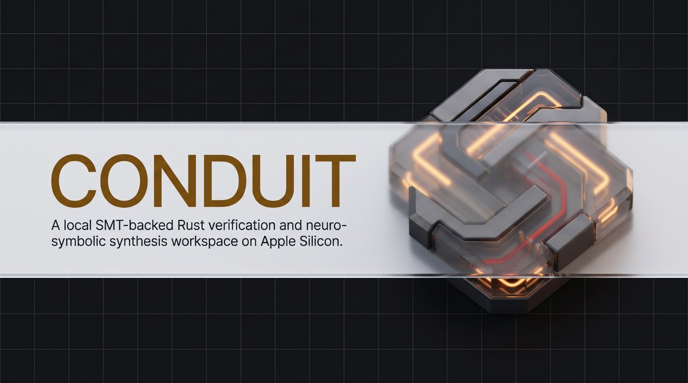

01 / PROVER
Verus + Z3
Verification-aware Rust with a native arm64 SMT solver, built from source against a pinned Rust toolchain.

A local SMT-backed Rust verification and neuro-symbolic synthesis workspace on Apple Silicon.
See the latest runNothing on this page is typed in by hand. scripts/collect_stats.py re-runs every check against the
workspace, writes data/stats.json, and saves the raw output of each
command under data/logs/. The page only renders that file.
| Repository | Commit | Commit date | Uncommitted files |
|---|
| Tool | Reported version |
|---|
Each repository is self-contained with its own pinned toolchain and isolated uv Python environment.
Verification-aware Rust with a native arm64 SMT solver, built from source against a pinned Rust toolchain.
LLM-driven proof repair over Verus benchmarks. Credentials are read from the environment; no secrets are stored in the repo.
Proof-driven synthesis exposed as the /skysynth skill for coding agents.
Repository-level verified code generation in Lean 4: frozen APIs and specs, agent-supplied implementations and proofs.
This is the exact file the latest run checked. requires and ensures are the specification;
loop invariants and decreases clauses are the proof. Verus turns them into SMT queries that Z3 must discharge.
A passing lake build means the frozen types, APIs and specs compile. It does not mean the specs are proved:
each remaining sorry is an open obligation for an agent to discharge. Benchmarks that depend on mathlib are
only built when the collector runs with --with-mathlib.
| Benchmark | Status | Build jobs | Open sorry | Seconds | Log |
|---|
rust_verify, the VIR and AIR encodings, and vstd's trusted (external_body/assume_specification) axiomsunsat answer is accepted without a checked proof certificateaxiom or left as sorry--with-mathlibAll PATH and environment exports live in a single sourced file. Your shell profile is never modified. Output lines below are taken from the latest run.
# activate everything
$ source ~/workspaces/verus-stack/env.zsh
# verify a real Verus file
$ cd "$VERUS_SOURCE" && verus ../examples/vectors.rs
# build a Vero benchmark
$ cd ~/workspaces/verus-stack/vero/benchmarks/Arithmetic && lake build
# regenerate data/stats.json and data/logs/ from scratch
$ cd conduit-lab && python3 scripts/collect_stats.py